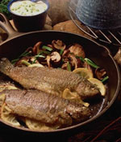
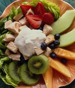

Ten Food Habbits
i. Eat slowly; chew your food well
It  takes 20 minutes before your stomach sends a clear message to your brain that you're full. If you take the time to chew your food
well, you will find you end up eating less. Ideally, you should have smaller, frequent meals as opposed to larger, infrequent ones.
takes 20 minutes before your stomach sends a clear message to your brain that you're full. If you take the time to chew your food
well, you will find you end up eating less. Ideally, you should have smaller, frequent meals as opposed to larger, infrequent ones.
ii. Eat more
If  you want to lose weight, starving yourself does not help -- you need to eat well. When your body doesn't receive the required nutrients, your metabolism slows down. Metabolism is the rate at which you burn calories while resting. So, if you don't eat enough, fewer calories will be burnt and there will be less fat loss. You should eat small meals at regular intervals to keep your energy levels high. Eat till you are satiated (at the same time, don't forget what we suggested in Tip No 1).
iii. Eat less red meat
Red meats are high in saturated fat and should be avoided by people with high cholesterol. Chicken and fish are the best meats to consume. Fish is better than chicken because it has antioxidants. Antioxidants are organic substances that include vitamins C, E, A and carotenoids; carotenoids add pigment to some fruits and vegetables. For instance, carrots wouldn't be orange without them. Beta-carotenoid is the most popular of carotenoids. Antioxidants help prevent cancer, heart disease and stroke. These meats can be baked, grilled or roasted. Frying will add unnecessary fat.
iv. Prevent constipation
Add fibre to your diet; this adds bulk to your food and prevents constipation. Whole grain foods like oatmeal, bran, wheat germ, brown rice, fruits (especially with their skin), prunes (dried plums), etc, are all good sources of fibre. Home remedies for constipation including the following:
- Have guavas with the seeds.
- Have honey in a glass of milk twice a day.
- Have one tablespoon of corn syrup in a glass of water.
Corn syrup is actually corn starch, which is primarily glucose. It is used in making candies, jams and jellies because it does not crystallise like sugar. Corn syrup is available in any well-stocked supermarket.
v. Have onion and garlic
Onion decreases blood pressure and garlic decreases cholesterol. Any amount and form of onion and garlic will give you the benefits of their properties, but a raw garlic clove taken on an empty stomach in the morning is the best.
vi. Use less salt in your cooking
Use minimum amount of salt for cooking if you have high blood pressure. Salt also causes water retention. This means your body will retain water if it is not receiving enough. After all, it still has to carry on the normal functioning of the organs and, if you are not drinking enough H2O, then the body starts keeping it. Water being taken in other forms, such as, soups, dals, drinks, etc, is retained for later use. Bloating and puffiness are all signs of water retention.
vii. Have calcium-rich foods
Use skimmed or double-toned milk and milk products as these contain less fat. Double-toned milk has lesser fat than toned or full cream milk. In the non-packaged variety, cow's milk is just as good as skimmed milk; it is definitely better than buffaloes' milk as the latter contains large amounts of fat. You should have between one and two glasses of milk a day. Other sources of calcium and protein can be taken instead of milk, if one is allergic to it. Calcium rich foods include almonds, figs, red kidney beans (rajma), mustard greens (sarson ka saag), etc. Proteins can be found in meats, sprouts, soya, dals, etc.
viii. Switch from maida to whole grains
Replace maida products with whole grains, whole wheat, soya breads, etc, as these have a good amount of fibre; fibre helps in binding cholesterol, which helps in less production of bad cholesterol. Whole grain foods like oatmeal, bran, wheat germ and brown rice, fruits, especially with skins, prunes, etc, are all good sources of fibre. Too much fibre may cause loose stools, so you have to monitor your individual intake accordingly. Medically, approximately 25 gm of fibre a day is enough to help maintain your digestive system. A good indicator: four slices of brown bread contains five grams of fibre; so does one large banana or orange.
ix. Have foods that contain iron
These include red meats, especially liver, fruits like watermelon and pomegranate, vegetables like spinach, beans, beets and broccoli, whole grains, dried fruits, especially prunes, sunflower seeds, etc.
x. Relish the flavours
You may have heard some of these before. But the best good food habit, which we all seem to overlook, is to actually taste and enjoy the flavours of the food with your emotions instead of just your tongue.
Dr. Sasikumar.M.NSenior Consultant Gastrologist
Lees Hospital, Ernakulam